EN

LO QUE NOS MUEVE
SOLUCIONES
CONTACTO
©2025 Y&F Group
Aviso de Privacidad
contacto@why-and-if.solutions
Tel: 55 4748 0723
Monte Elbruz 124, Piso 2, Int. 212-B, Lomas de Chapultepec III Secc., Miguel Hidalgo, C.P. 11000, Ciudad de México